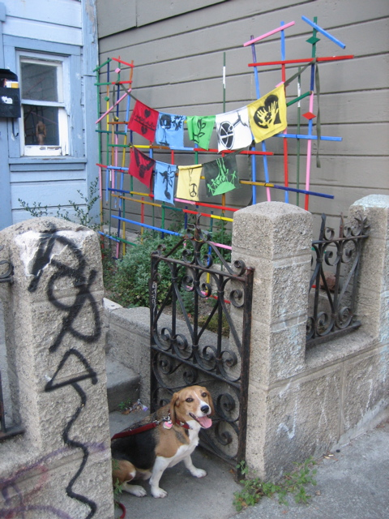

<--Previous
Up
Next-->

More hipster prayer flags
On the north side of 25th Street between Lucky and Treat. The colorful stick framework has been here for a long time (Dave often rides by it on his way to work) but the flags were new.